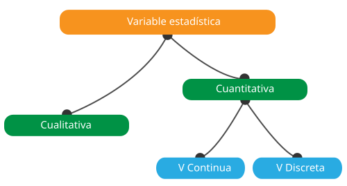
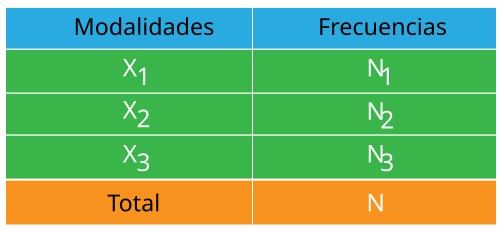

Definiciones de los términos
1- Estadísticas descriptivas El objetivo de las estadísticas descriptivas es describir, es decir, resumir o representar, a través de las estadísticas, los datos disponibles cuando son numerosos.
2- La población estadística es el conjunto de hechos, individuos, objetos o fenómenos a los que se refiere el estudio estadístico.
3- La unidad estadística es un elemento constitutivo de la población estadística
4- El carácter estadístico
es una propiedad distintiva de la unidad estadística de interés.
Ex: Edad, sexo, religión,...
Se dice que una característica
es cuantitativa cuando es mensurable y cualitativa cuando no lo es.
5- Las modalidades estadísticas
son el conjunto de valores o situaciones posibles que pueden atribuirse a
una característica estadística
Ex: Hombre / Mujer para el sexo
6- La variable estadística
es un atributo que describe a una persona, lugar, cosa o idea.
Las variables
pueden clasificarse como cualitativas (aka, categóricas) o cuantitativas
(aka, numéricas). El reconocimiento de los diferentes tipos de variables
es el primer paso en el análisis de los datos, ya que de él depende la elección
de las herramientas y métodos estadísticos que se utilizarán.
6-1 Variables cuantitativas
son numéricos y representan una cantidad mensurable. Por ejemplo, cuando
hablamos de la población de una ciudad, estamos hablando del número de
personas en la ciudad - un atributo mensurable de la ciudad. Por lo tanto,
la población sería una variable cuantitativa. Existen dos tipos de variables
cuantitativas: variables cuantitativas continuas y discretas.
Si una variable puede tomar cualquier valor entre su valor mínimo y su valor máximo, se denomina
variable continua en caso contrario, se denomina variable
discreta.
6-2 Variables cualitativas
asumen valores que son nombres o etiquetas. El color de una pelota
(por ejemplo, rojo, verde, azul) o la raza de un perro (por ejemplo,
collie, pastor, terrier) serían ejemplos de variables cualitativas o
categóricas. Al igual que con las variables cuantitativas, se distinguen
dos tipos: variables cualitativas nominales y ordinales.
Las variables cualitativas nominales se caracterizan por modalidades que no
se pueden ordenar, como el color del pelo (blanco, negro, rojo...) y, por el contrario,
las variables cualitativas ordinales se caracterizan
por modalidades que se pueden ordenar, como el nivel de educación (primaria, secundaria, superior).

7- La frecuencia es el número de unidades estadísticas con una modalidad determinada, se indica Ni y sigue llamándose frecuencia absoluta.
8- La encuesta estadística es una operación diseñada para recopilar datos o información.
9- El proceso de recuento es el proceso de contar o contar los datos u observaciones recogidos de una encuesta estadística.
10- El cuadro estadístico
es una forma de presentar los datos estadísticos a través de una disposición
sistemática de los números que describen algún fenómeno o proceso de masa.
Tres tipos de tablas estadísticas se distinguen según la estructura del tema.
En las tablas simples, el tema es un solo fenómeno. En las tablas bidireccionales,
el sujeto exhibe una clasificación con respecto a un solo factor. En las tablas
multidireccionales, las clasificaciones con respecto a dos o más factores se
utilizan en el tema.
Las tablas estadísticas deben contener toda la información
necesaria en forma compacta. Los encabezamientos de las tablas deben ser precisos
y cortos. Deberán indicarse las unidades de medida utilizadas, así como el lugar y
el momento a que se refiere la información.

11- La representación gráfica también conocidas como técnicas gráficas, son gráficos en el campo de las estadísticas utilizadas para visualizar datos. Al presentar los datos gráficamente, obtenemos un análisis inmediato de los datos. Las principales representaciones gráficas son el histograma, el diagrama de caja, el diagrama de barras, el diagrama de líneas y el diagrama de tarta.

12- Los parámetros descriptivos permiten resumir en pocas cifras las distribuciones de las variables que componen la muestra. Dependiendo del tipo de variable, se utilizarán diferentes parámetros. Así, las frecuencias y proporciones se calcularán según las modalidades de una variable cualitativa y una gama más amplia de parámetros descriptivos separados en dos grupos para una variable cuantitativa: parámetros de posición y parámetros de dispersión.
12-1 Los parámetros de posición son medidas de tendencia central que definen los valores en torno a los cuales se distribuyen las observaciones.
12-1-a La media es la relación entre la suma de los valores de la serie estadística y el número de valores.
12-1-b La mediana es el valor que permite dividir una serie numérica ordenada en dos partes del mismo número de elementos
12-1-c El modo es el valor más representado de cualquier variable en una población
12-1-d Cuartil es un tipo de cuantillo. El primer cuartil (Q1) se define como el número medio entre el número más pequeño y la mediana del conjunto de datos. El segundo cuartil (Q2) es la mediana de los datos. El tercer cuartil (Q3) es el valor medio entre la mediana y el valor más alto del conjunto de datos.
12-1-e Percentil o un centímetro es una medida utilizada en las estadísticas que indica el valor por debajo del cual cae un determinado porcentaje de observaciones en un grupo de observaciones.
12-2 Parámetros de dispersión evaluar la distribución de las observaciones en torno a los valores centrales
12-2-a Rango es la diferencia entre el valor máximo de la variable y el valor mínimo.
12-2-b Varianza es la expectativa de la desviación al cuadrado de una variable aleatoria de su media.
12-2-c La desviación estándar es el indicador utilizado para medir la dispersión de una serie estadística cuantitativa. Es igual a la raíz cuadrada de la varianza.
12-2-d Intervalo intercuartil es la diferencia entre el primer y tercer cuartil. Contiene el 50% de los datos (25% a cada lado de la mediana).
13- La frecuencia relativa o proporción es la relación entre la frecuencia absoluta de un valor y la frecuencia absoluta total.
14- La covarianza es un método matemático para evaluar la dirección de variación de dos variables para calificar su independencia.
15- El coeficiente de variación
es el indicador que mide la homogeneidad de una distribución estadística
- Si es menor o igual al 33% entonces la distribución es homogénea
- Si es mayor al 33% la distribución es heterogénea.